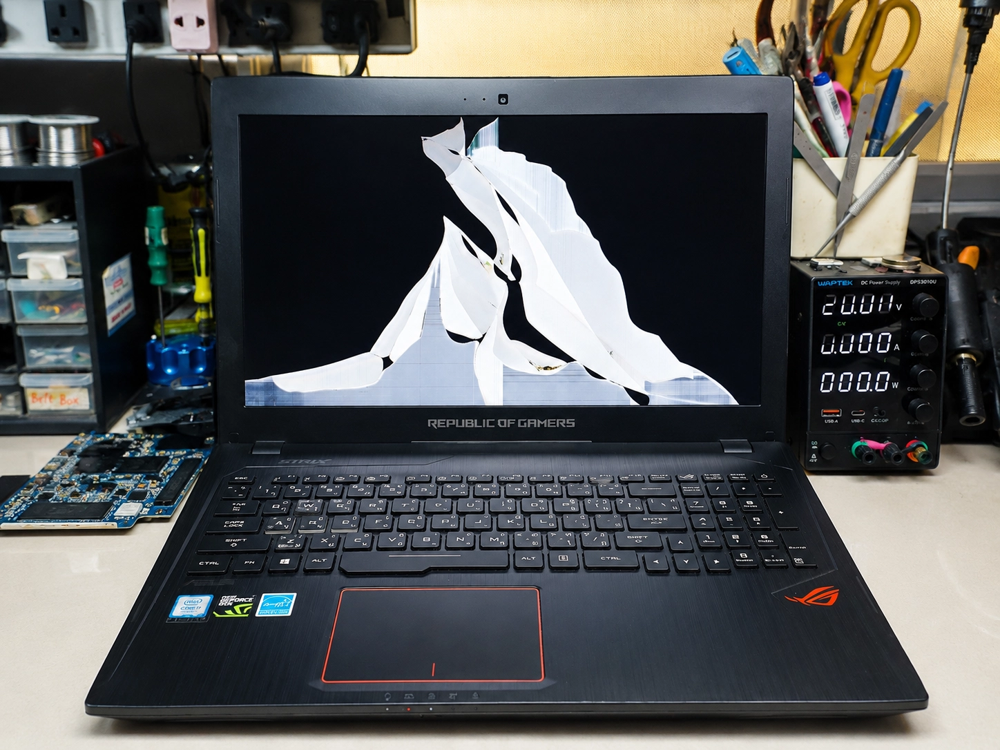
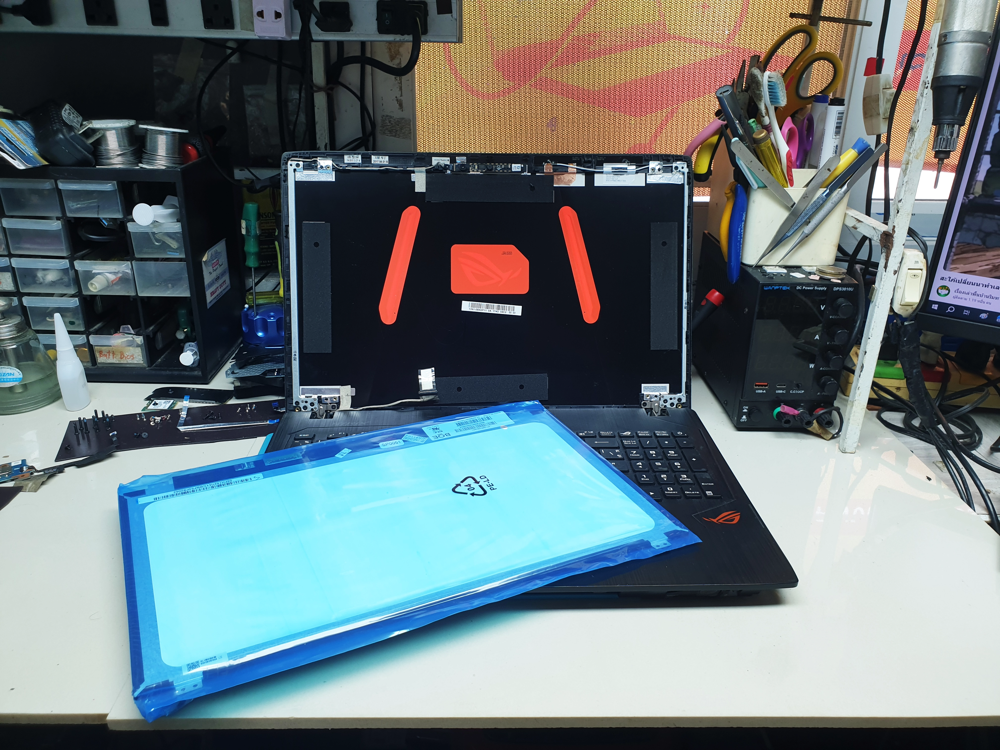

1. การตรวจเช็คอาการก่อนซ่อม
ลูกค้าส่งเครื่อง Asus ROG Strix GL553VD-DM1006 เข้ามาที่ร้านด้วยอาการจอแตก เกิดจากอุบัติเหตุการกระแทก ทำให้หน้าจอแสดงผลเป็นเส้นแตกกระจาย ไม่สามารถมองเห็นภาพหรือใช้งานได้ตามปกติ แต่ตัวเครื่องยังคงทำงานและจ่ายไฟเข้าได้ตามปกติ

คลิกที่รูปเพื่อขยายใหญ่2. ขั้นตอนการซ่อมและแก้ไข
ช่างทำการแกะฝาครอบจอและถอด Panel จอภาพที่แตก damaged ออกด้วยความระมัดระวัง พร้อมตรวจเช็คสายแพร์จอ (EDP Cable) และทำการติดตั้งจอภาพใหม่ตรงรุ่นมาตรฐานโรงงาน พร้อมบริการพิเศษทำความสะอาดปัดฝุ่นระบบระบายความร้อนและหยอดซิลิโคนพรีเมียมฟรี

คลิกที่รูปเพื่อขยายใหญ่3. สรุปผลงานซ่อมและการทดสอบ
หลังดำเนินการเปลี่ยนจอใหม่เรียบร้อย ทดสอบเปิดเครื่องภาพแสดงผลได้สมบูรณ์ คมชัด สีสันสดใส ไม่มีจุด Bright/Dead Pixel และทดสอบฟังก์ชันการทำงานครบถ้วน เครื่องพร้อมส่งมอบคืนลูกค้าบริการรวดเร็วเปลี่ยนจอโน๊ตบุ๊ค เชียงใหม่ รอรับกลับได้ทันที
 คลิกที่รูปเพื่อขยายใหญ่
คลิกที่รูปเพื่อขยายใหญ่
คำถามที่พบบ่อย (FAQ)
ข้อสงสัยเบื้องต้นเกี่ยวกับการซ่อมและอะไหล่รุ่นนี้
ซ่อมโน๊ตบุ๊คเชียงใหม่ Computer Services
งานซ่อมได้มาตรฐาน อะไหล่แท้ตรงรุ่น ตรวจเช็คฟรี ประสบการณ์มากกว่า 10 ปี